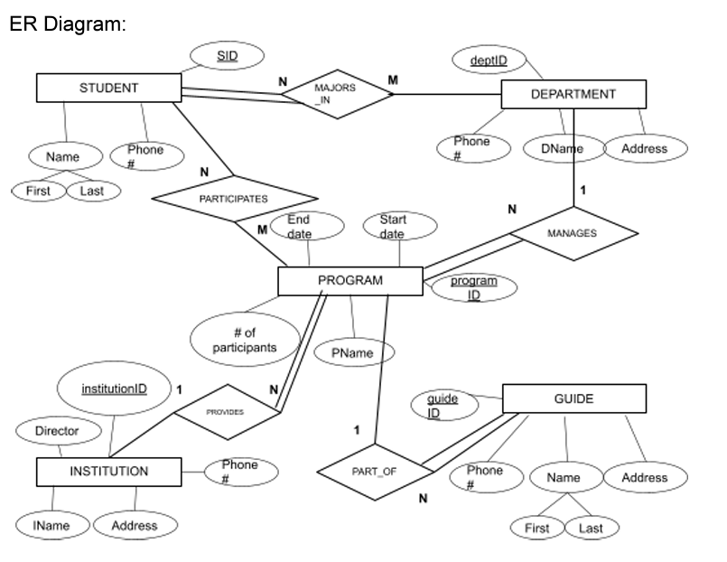
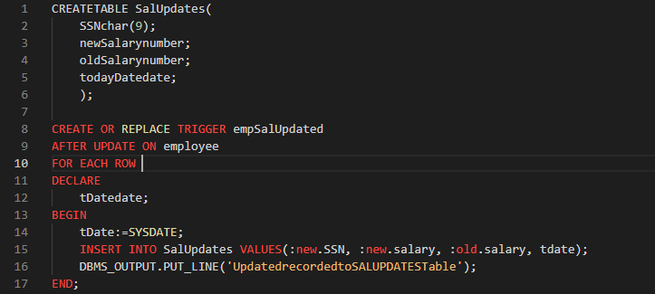

This is an example of my formal writing skills. In this example, I wrote a trial Research Proposal.
The time will come when every college student has to decide what occupation they will strive for. More often than not college majors after graduation do not work in the field they studied. Whether it is a fear of the unprecedented challenge that may arise while pursuing a dream career or something more foundational. Foundational as in simply choosing a major that sacrifices happiness for monetary gains and later regretting it. It happens too often and I too fear the consequences of my decisions. As a major of information science, I have chosen a field that encompases a large spectrum of occupations, which require highly specialized technological skills. But not as intensive in the same regard as a field like computer science. Even so, many aspiring majors of information science may want to know what to expect when entering the job market. More so, they may want to know what is expected of them when entering the job market. Honing the skills required to successfully land a job in the information science field is required from the start to the finish of an occupational journey. But what matters most for a fresh out of college major is landing that first job. In this case, preparation is key. My goal is to present research that may help new information science majors figure out what employers generally need in an employee. This may also help my occupational goals. But overall this may help majors of our field land that first job and get a head start in pursuing a career beyond that.
The question that has been established for this research is “What skills do employers of popular information science occupations commonly expect of new majors entering the field? This question could potentially lead into finding “What do employers of popular information science occupations commonly expect of employees striving for a promotion? These questions have been chosen because the first encompasses the initial goal of my research. It is to establish some benchmark skills new majors can prepare to be better prepared for the job market. The second question will make the research less one-dimensional. It may assist new majors in planning for what comes after that entry level information science job. This will contribute to the broader career path in comparison to the narrowed first question. Although it is not the original goal of this research, established majors of the field may also find it beneficial. It is likely that not all established majors have a clear cut career path planned out. By introducing the second question, established majors who are still striving for a higher occupation may potentially receive the information that nudges them towards their dream job.
For the method of my research I have decided to divide the process into doing quantitative research and qualitative analysis. The quantitative research will involve gathering data about the most popular information science jobs. Starting off with this simple task is critical to organizing the process. This way I can decide what jobs will be featured. Additionally, it would contribute to deciding how many jobs will be featured. Doing so would establish a simple foundation. The data will derive from scholarly sources, credible web pages, and studies. I find that using a variety of sources will be the best method to ensure the occupations that are featured are likely to be entered by new majors. The content of these sources will be graphs, charts, and study results. I will then be able to construct my own graphs, tables, and charts to reflect the trends of the information science job market.
Next, the process continues with the central research that will allow me to answer my research questions. That would be figuring out what employers in the information science field expect from new majors entering the job market. Furthermore, it will have to be expanded on to figure out what already established majors need to potentially obtain a higher occupation. The content of this research will be from interviews, online sources, academic journals, and other credible sources that reflect the hiring practices of employers. This portion will take a vast amount of time to complete. It is much more in depth than the statistics from the beginning of the method. Deducting expectations from interviews, online sources, and journals will mean devoting a lot of time to analyzing the context. Some information libraries I plan to use are Google Scholar, JSTOR, and Wiley. If I find any other credible libraries to reference that would build bibliography of scholarly/academic sources used for my research. Additionally, I plan to use job hiring sites to find some immediate characteristics employers are searching for in hired individuals. Sites such as Indeed, ZipRecruiter, linkedIn may be sufficient sources for this type of information. Similar to before, if I find other credible job hiring sites it will contribute to my bibliography of credible online sources. Doing an analysis is what I believe to be the most important portion of the research process. That is how I will transform the qualitative data gathered from these various sources into an answer suitable for my research questions. The analysis will discover a commonality between the sources. That commonality will be the information that assists new information science majors, like myself, in obtaining that first job. And it may assist older majors in moving up the occupational ladder.
The issue that may arise with analyzing the expectations of various information science employers is finding a benchmark that gives my targeted audience a concise answer. Although these employers are all related by which field they operate in they are still human. What they may seek in an individual applying for their job could be boundless. There are no preset rules that force them to look for the same characteristic when hiring. Oftentimes, the state of each employer’s business is not the same. There could be a spectrum of issues that influence the type of individuals that will be hired. It may be a financial, structural, temporary, or persistent issue that may affect hiring practices. So, it is likely that employers will have different standards. Therefore, my goal will be to find a commonality between the expectations of each employer. That way the purpose of this research can be reasonably achieved. That way the research questions I have set out to answer will not just receive a subpar answer. The answers will be concise, well thought out, and effective.
This is another example of my formal writing skills. In this example, I wrote a report on the violation of FERPA at universities.
FERPA can often be violated at universities unintentionally through methods such as email, conversations, or letters. A professor may send an email out to all of their students informing the students of their failing or passing grade. Without the proper measures students in the same email list may be able to identify who is failing and who is passing. A professor may accidentally disclose to another professor that a student they share withdrew from class due to a failing grade. One that is not known by most students is the sending of recommendation letters to employers. Without going through the correct procedures, a professor is not allowed to disclose educational information to employers. This is why students have to be properly informed about their FERPA rights. Not doing so is also a violation of FERPA.
Governance by leaders such as the Chancellor, the Dean, or the Board of Trustees influences the goals of the university. In this case, compliance with FERPA is the goal of the university. Leaders of the university can establish a group that solely aims to make sure the university complies with FERPA. At the University of Arkansas at Little Rock, that group is called the Family Policy Compliance Office. They are responsible for enforcing policies so that the university meets the standards of FERPA. The Family Policy Compliance Office oversees documents identified by FERPA that are involved in activities such as disclosure, non-disclosure, or transfer. They are also responsible for informing students of their rights in reference to FERPA. In order for the Family Policy Compliance Office to exist, leaders such as the Dean, the Chancellor, and the Board of Trustees have to establish the importance of FERPA within the goals of the university.
The CIA security principle is a model used by security systems to identify vulnerabilities and solve them before they can be taken advantage of with malicious intent. C stands for confidentiality. I stand for Integrity. A stands for availability. Confidentiality means that data is protected so that anyone without proper authorization is unable to view sensitive data. Confidentiality is meant to protect the identities and other valuable information, like patents, from potential cyber criminals or leaks. Integrity is maintaining the accuracy, authenticity, and consistency of data. Integrity ensures that no unauthorized changes are made to data so that data is not devalued or misleading. Availability means that those with authorized access to sensitive data such as partnered organizations or database users can access that information when needed without disruption. Availability makes sure organizations that rely on that database are not hindered by potential outages and can receive proper support in case of one.
Confidentiality in the CIA supports one of the main goals of FERPA which is the protection of educational records of students. Confidentiality means that educational records kept by the university will only be accessible to people that the data’s owner permits. No educational records using the CIA principle will be unintentionally disclosed by professors. Integrity makes it so that unauthorized users can not alter the educational records protected by FERPA. With integrity only the owner of the educational record can request a change to that record. And that is only if the change does not make the record inaccurate or inconsistent. Availability in CIA supports the second main goal of FERPA which is allowing students access to their educational records whenever they want. Availability will ensure that every owner of educational records has access upon request. It also makes sure that anyone given permission to access the educational records by the student can view them without disruption.
AAA services is a framework for controlling access to computer resources. AAA involves identification, authentication, authorization, auditing, and accounting. Identification is a way to apply accountability to anyone accessing information, like a username. Any actions taken regarding that information is linked to the identity used to access it. Identification requires authentication. Claiming an identity is easy but authentication is to protect the actual owner of the identity. Identity is often authenticated through some type of password. Authorization is granting rights to access information to an individual. After being identified and authenticated, the user is authorized to view and use the information. There may be different levels of authorization depending on the identity of the user. Accounting and Audit work in conjunction. Accounting is to make sure that the identified user is linked to all actions surrounding the data being accessed. Auditing is used for the purpose of accountability. In case of an emergency and for safety, an organization keeps track of the actions of a user. It is a log of sorts that an organization keeps to monitor activities pertaining to data.
AAA as a framework enables FERPA by first establishing who the owners of educational records are through identification. The way that FERPA can identify the owner of the record is through ID, University ID, Military ID, etc. A photo form of identification to establish the owner of the record. Photo ID also doubles as authentication. FERPA wants to protect who accesses the educational records and a photo ID confirms that the person accessing the record is who they say they are. The AAA framework has already supported FERPA through identification and authentication. AAA further complies with FERPA through authorization. Only the student and the people the student gives authorization to are able to access an educational record. Furthermore, AAA audits the use of data to apply accountability. In FERPA, the students and university are accountable for tracking any changes to educational records. In the case that a record is false, the accountability is shared by the university and the student. The student is accountable for requesting the change and the university is accountable for auditing the change.
The following is an ER Diagram for a database that tracks Students' Study Abroad.
The following is a PL/SQL Assignment. In this assignment, I created an Employee Salary Table and Triggers upon Updating the table.
I created a basic Sum Calculator. It calculates the sum of 1 through a prompted top number. Check it out.
Sum Calculator